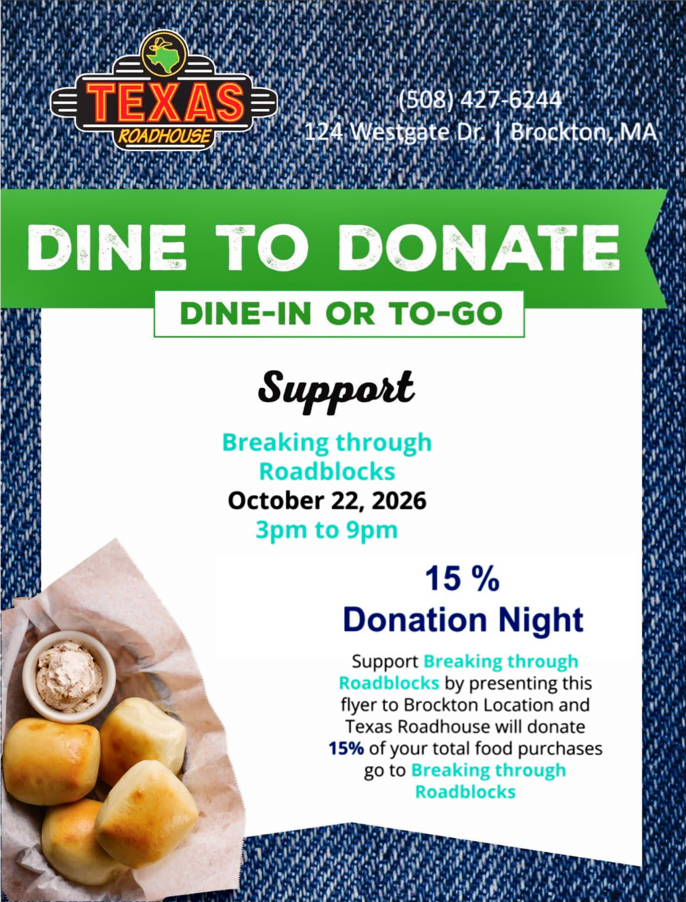
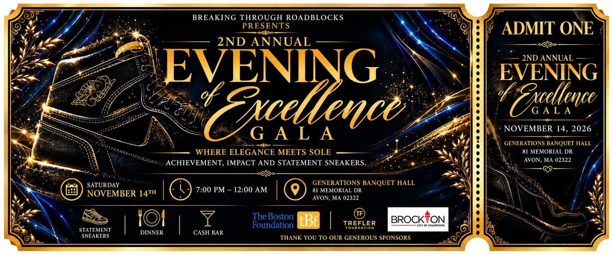
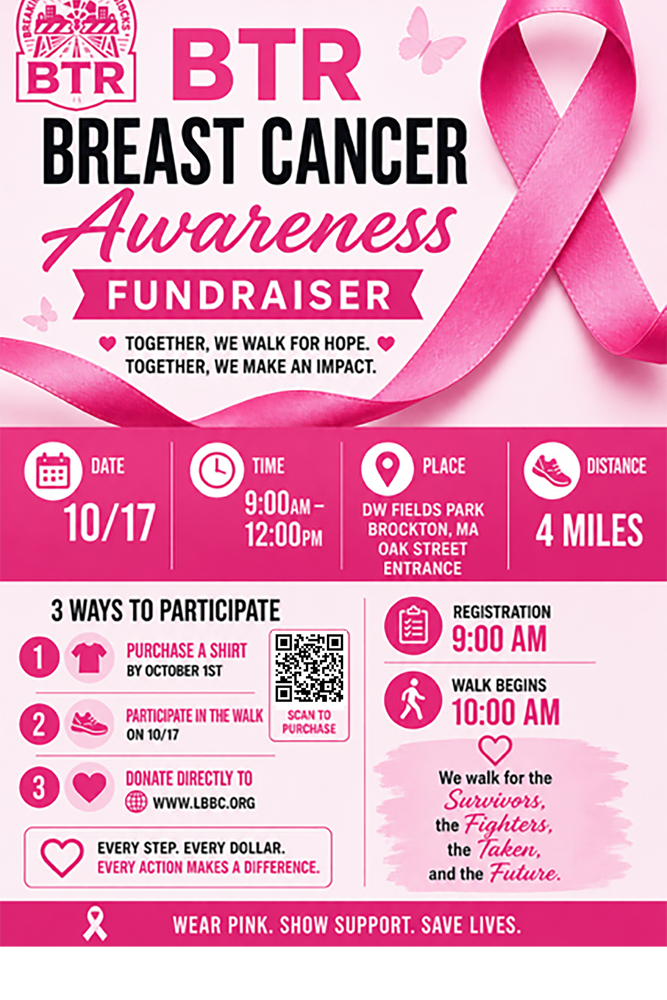
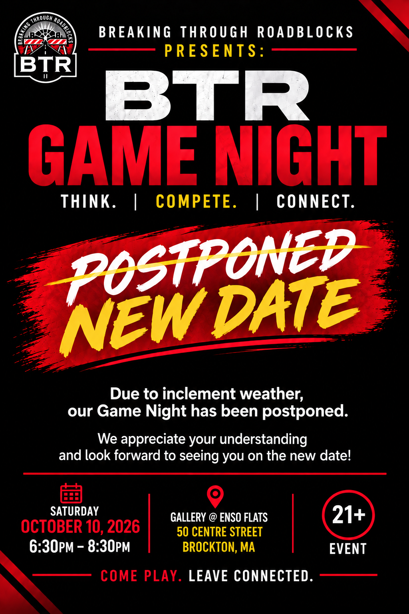
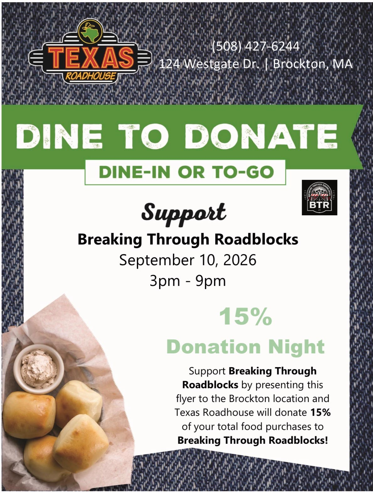
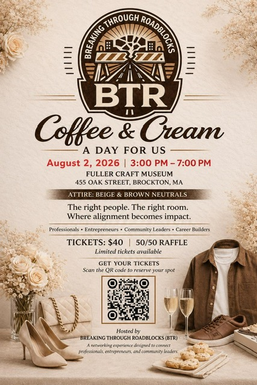
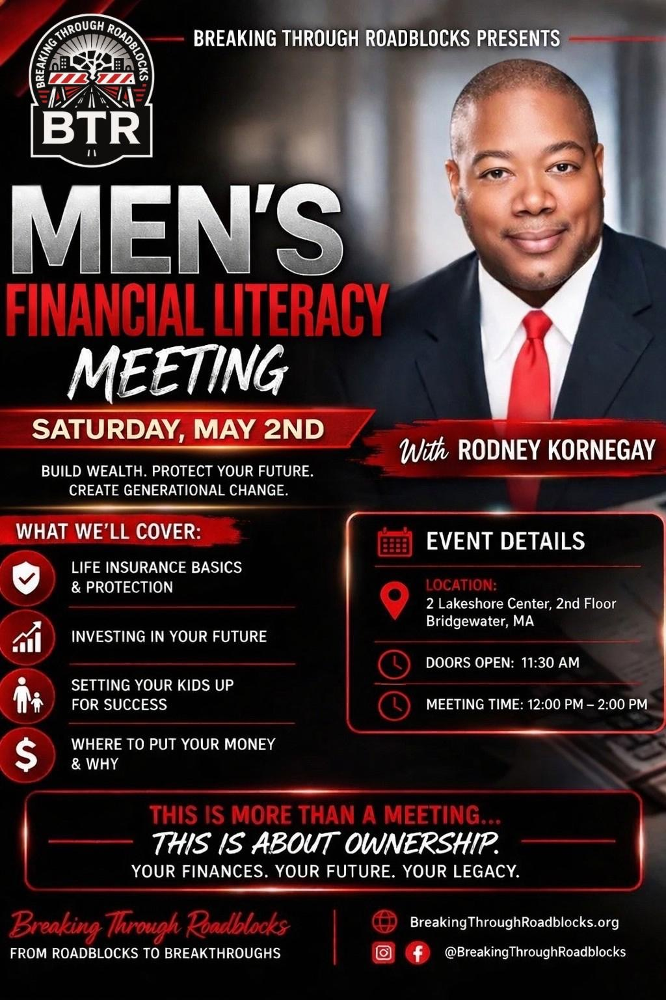
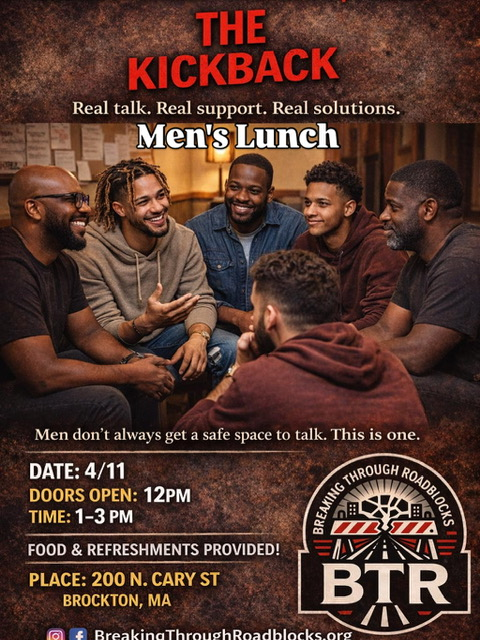
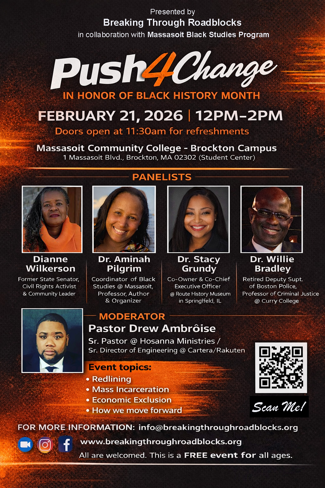
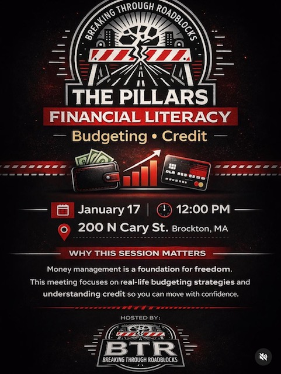

OCTOBER 22, 2026 · 3–9 PM
Dine to Donate
Texas Roadhouse · 124 Westgate Drive · Brockton, MA
Dine in or order to-go and present the flyer. Texas Roadhouse donates 15% of your food purchase to BTR.
CONNECT WITH YOUR COMMUNITY
WHAT’S NEXT

OCTOBER 22, 2026 · 3–9 PM
Texas Roadhouse · 124 Westgate Drive · Brockton, MA
Dine in or order to-go and present the flyer. Texas Roadhouse donates 15% of your food purchase to BTR.
NOVEMBER 14, 2026

OUR SIGNATURE CELEBRATION
Celebrate community achievement with dinner, music, and formal attire paired with statement sneakers.
OUR COMMUNITY IN ACTION

OCTOBER 17, 2026 · 9 AM–12 PM
D.W. Field Park · Oak Street entrance · Brockton, MA
A four-mile walk to honor survivors, support fighters, and raise awareness. Registration opened at 9 AM and the walk began at 10 AM.

OCTOBER 10, 2026 · 6:30–8:30 PM
Gallery @ Enso Flats · 50 Centre Street · Brockton, MA
Conversation, games, and friendly competition for ages 21+. Rescheduled from September 26.

SEPTEMBER 10, 2026 · 3–9 PM
Texas Roadhouse · 124 Westgate Drive · Brockton, MA
A dine-in and to-go fundraiser supporting BTR through a 15% food purchase donation.

AUGUST 2, 2026 · 3–7 PM
Fuller Craft Museum · 455 Oak Street · Brockton, MA
A networking experience connecting professionals, entrepreneurs, and community leaders.

MAY 2, 2026 · 12–2 PM
2 Lakeshore Center · 2nd Floor · Bridgewater, MA
With Rodney Kornegay: insurance basics, investing, planning for children, and building a financial legacy. Doors opened at 11:30 AM.

APRIL 11, 2026 · 1–3 PM
200 North Cary Street · Brockton, MA
Real conversation and support over lunch. Food and refreshments provided; doors opened at noon.

FEBRUARY 21, 2026 · 12–2 PM
Massasoit Community College · Brockton Campus
A Black History Month discussion on redlining, mass incarceration, economic exclusion, and how communities move forward.

JANUARY 17, 2026 · 12 PM
200 North Cary Street · Brockton, MA
A session on real-life budgeting strategies and understanding credit.
EVENT DETAILS
SAVE THE DATE!
Get ready for an unforgettable evening as Breaking Through Roadblocks proudly presents our 2nd Annual Evening of Excellence Gala!
This isn't just another gala. It's a celebration of achievement, resilience, and the people who are making a difference in our communities. Put on your finest attire, pair it with your favorite statement sneakers, and join us for an evening of inspiration, networking, great food, music, and celebration.
Tickets are going fast. Get yours today. A limited number are available.
📅 Saturday, November 14
🕖 7:00 PM – 12:00 AM
📍 Generations Banquet Hall
81 Memorial Drive
Avon, MA 02322
Tickets: $100
Table (10-Tix): $900
Your attendance directly supports the mission of Breaking Through Roadblocks, helping us continue to provide mentorship, leadership development, and life-changing community programs that empower youth and families to overcome obstacles and reach their full potential.
Dress Code: Formal Attire with Statement Sneakers
Dinner Included
Cash Bar
GAME NIGHT!!!
Ready for a night where you can laugh, connect, compete, and just enjoy yourself?
Join Breaking Through Roadblocks (BTR) for our Men & Women Game Night, an evening designed to bring people together in a relaxed, grown-up atmosphere.
📅 Saturday, October 10, 2026
⏰ 6:30 PM – 8:30 PM
🔞 21+ Only
We’re kicking things off with some real and entertaining conversation between men and women about how we communicate, connect, and sometimes hear the exact same words completely differently! 😄
Then it’s GAME TIME! 🎯🃏🎲
Expect plenty of laughs, friendly competition, great music, and opportunities to meet and connect with new people. Whether you’re coming to play, socialize, network, or just enjoy the atmosphere, there’s something for everyone.
🥤 Refreshments Provided
🍸 Cash Bar Available
🎲 Games & Friendly Competition
🤝 Great People & New Connections
No long speeches. No pressure. Just good conversation, good energy, and a fun night with the BTR community.
Bring a friend, bring your competitive spirit, and come ready to have a great time!
BTR Breast Cancer Awareness Fundraiser
Join Breaking Through Roadblocks (BTR) as we come together to raise awareness, show support, and make an impact in the fight against breast cancer.
On October 17, we’ll gather at D.W. Field Park in Brockton for a 4-mile Breast Cancer Awareness Walk dedicated to honoring the survivors, supporting the fighters, remembering those we’ve lost, and creating hope for the future.
Registration begins at 9:00 AM, with the walk starting at 10:00 AM at the Oak Street entrance.
The event runs from 9:00 AM–12:00 PM.
There are three ways to make a difference:
purchase a BTR Breast Cancer Awareness shirt by October 1,
join us for the walk on October 17, or
make a direct donation to Living Beyond Breast Cancer (LBBC).
Shirts will also be available for sale on site.
Whether you walk, purchase a shirt, donate, or simply help spread the word, your support matters. Every step, every dollar, and every action makes a difference.
Together, we walk for hope. Together, we make an impact.
💗 Wear Pink. Show Support. Save Lives.
DINE TO DONATE
Join Breaking Through Roadblocks (BTR) at Texas Roadhouse in Brockton on Thursday, October 22, 2026, from 3 PM–9 PM for our Dine to Donate Night.
When you dine in or order to-go and present the flyer, Texas Roadhouse will donate 15% of your total food purchase to Breaking Through Roadblocks.
Your support helps BTR continue providing mentorship, youth development, community programs, educational opportunities, and events that bring people together and help individuals overcome roadblocks.
The best part? You’re already eating dinner, so why not make your meal count for something bigger?
Texas Roadhouse
124 Westgate Dr., Brockton, MA
October 22, 2026
3:00 PM – 9:00 PM
Dine-In or To-Go
Enjoy a great meal while helping make a difference in our community! Remember to present the flyer!
Reserve your place at a BTR event.
Explore event registrationCheck in when you join us.
Explore event sign-inConnect your business with BTR events.
Explore vendor registration